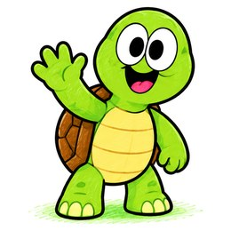
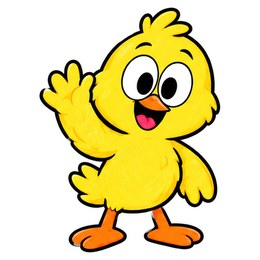
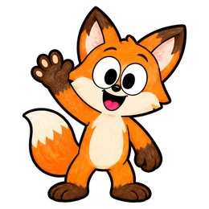
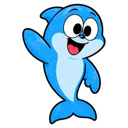
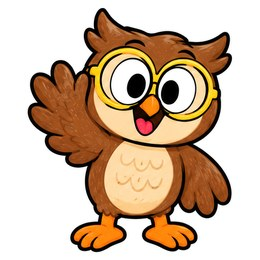

Free pack builder · Kindergarten and 1st grade
Short A Worksheets for Kindergarten
Cat, map, van, bag: short a words, from hearing the sounds to reading and spelling the words. Pick the kinds of pages you want, and we put them together into one pack with your child's name on the cover. Make one pack, or one for every child in a class.





- 1Pick pages
- 2Make it theirs
- 3Get your pack
Pick the kinds of pages
Choose as many as you like. The pack goes from the easier pages to the harder ones.
Make it theirs
Everything you set shows on the pack right away.
One name on each line. The names stay on this computer: nothing is sent or saved.
What is in a short a words pack
Every pack starts with a cover that has your child's name on it and a start-here page for you, with the a sound and the words to say together first. Then come the activity pages, from the easier ones to the harder ones: hearing each sound, blending the sounds into a word, reading the word, then spelling it. Answer keys go at the back, so you can check together.
Every page is drawn fresh when you press the button, so a second pack is not a copy of the first. Make one for this week and another one next week.
A pack for every child in a class
Choose Whole class and paste your class list, one name on each line. Every child gets the same pages, with their own name on the cover and on every page. Print all the packs together, or one child at a time. The start-here page and the answer keys come once, for you. The names stay on your computer: nothing is sent or saved.
How to teach with it
- Watch me. Before a new kind of page, do the first one out loud yourself. Say each sound, then blend: c, a, t, cat.
- We do. Do the next one together. Point under each letter while your child says the sound.
- You do. Let your child try the rest. Help with one sound, not the whole word.
- Stop while it is fun. A page or two a day is plenty.
When short a words feel easy, From Sounds to Words is a 10-day blending plan with a short video every day. You can also make one worksheet at a time with our free worksheet makers.
Questions parents ask
Are these short a words worksheets free?
Yes. Every page in the pack is free to print, as often as you like. Make a new pack any time and the pages come out different.
How many pages can a pack have?
Up to 60 activity pages, plus a cover with your child's name, a start-here page for you and answer keys at the back. No page is ever repeated, so each kind of page makes only so many different pages: tick more kinds for a bigger pack.
What age are these short a words worksheets for?
Kindergarten and 1st grade, about ages 4 to 7. The pack goes from hearing the sounds to reading and spelling the words.
Can I print it in black and white?
Yes. Pick black and white before you make the pack. Every page is drawn for black and white too, so it still looks finished and saves ink.
Can I make a pack for every child in my class?
Yes. Choose Whole class and paste your class list, one name on each line. Every child gets a pack with their own name on the cover and on every page. The names stay on your computer.
Is reading hard for your child, and you are not sure why?
“Behind in reading” can mean eighteen different things, and each one needs different help. Check off what is true for your child. You will see what to work on first, and what can wait.